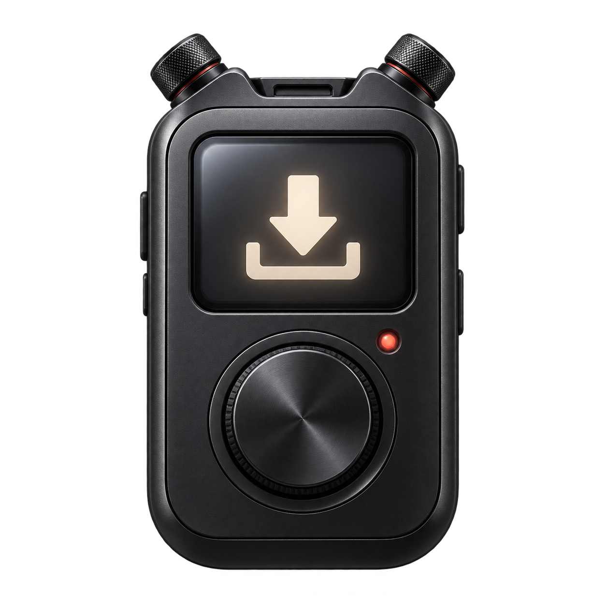

Your mods.
In your folder.
Paste a Project Zomboid Workshop link, choose a destination and press download. A small native app that feels like a device.
Download for Windows
One link. One folder.
Official SteamCMD, prepared automatically. Each completed mod gets its own folder.
A native little device.
Rounded edges, physical button animation and status inside the display. Built in Rust with GPUI.
In your language.
English, Portuguese and Japanese. The first launch detects your Windows language.
Before you download
Supports individual Project Zomboid items that permit anonymous SteamCMD access. Collections and login-required items are unsupported. Downloading saves files; installation and activation in the game are up to you. The release is unsigned.
The illustration is application artwork, not a screenshot.
Contributions welcome.
Help improve translations, accessibility, reliability or the native interface. Read the contribution guide, open an issue or send a focused pull request.